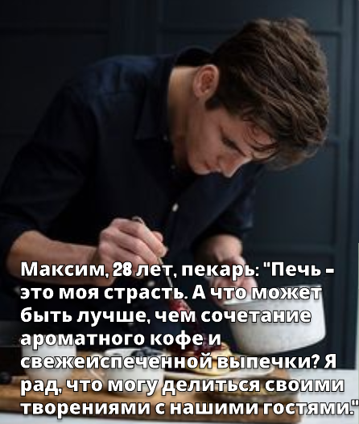
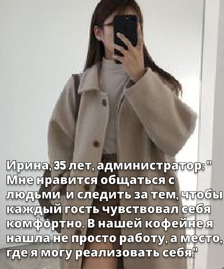
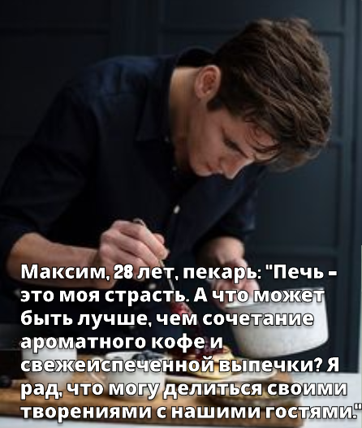
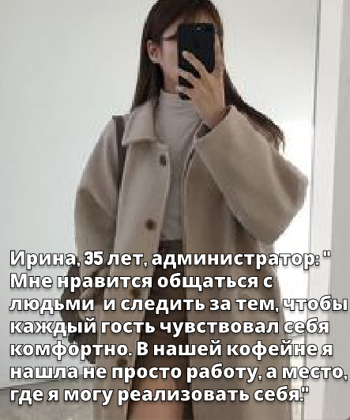

с чего все началось
НАША ИСТОРИЯ
Две девушки, я и моя подруга начинали свой путь к открытию кафе еще с 16 лет, когда мы работали в сфере обслуживания в качестве официанток. Уже тогда мы видели несовершенство системы, недочеты в меню и качестве сервиса. У нас появилась мечта, к которой мы шли долгих 15 лет – открыть свое кафе.
А теперь сегодня, представьте маленькое кафе в центре города — уютное место, где аромат свежесваренного кофе витает в воздухе, а каждый уголок создан для того, чтобы укутать вас теплом и вдохновением.


 


